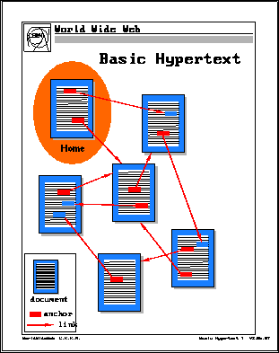
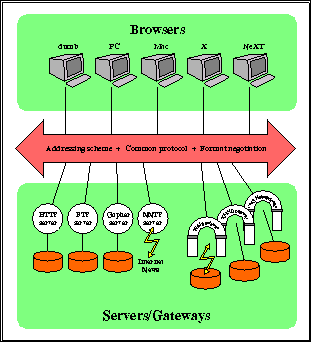

World Wide Web - ofte bare forkortet WWW eller Web - er det desidert viktigste informasjonssystemet som har dukket opp på Internettet de siste årene, og får sammen med WWW programmet NCSA Mosaic ofte store deler av æren for den enorme kommersielle interessen for Internet man nå ser over hele verden.
WWW gjør det nemlig svært enkelt å bruke Internettet, og det er særlig fasene vi kan kalle informasjonspublisering, informasjonssøk og informasjonslesing som blir en lek vha. World Wide Web.
WWW bygger på hypertekst prinsipper, men har videreført det tradisjonelle hypertekst konseptet til det vi kan kalle ``distribuert hypermedia''.

Til forskjell fra vanlig sekvensiell tekst slik vi kjenner det fra en bok eller avis, har hypertekst såkalte linker i seg som gjør det mulig å hoppe til andre steder i teksten, evt. til andre dokumenter.
Innenfor WWW kan du også gjøre dette, men her kan dokumentene befinne seg på en annen maskin i Internettet! Og det behøver ikke bare dreie seg om ``dokumenter'' i snever forstand - WWW favner nemlig også lyd, bilde og digital video.
Og som om det ikke skulle være nok med det - de fleste andre rammeverkene vi har drøftet i dette kurset dekkes også av WWW. Dette betyr bla. at ``linkene'' våre like gjerne kan være til Gopher tjenere, FTP tjenere, WAIS databaser, News grupper og Telnet forbindelser som til andre HTML dokumenter.
HTML (Hypertext Markup Language) er kodespråket som benyttes for å kode Web dokumenter, og mekanismen for å overføre dokumentene fra en Web server til en Web browser (klient) kalles HTTP (Hypertext Transfer Protocol).
Disse meget kraftige egenskapene til World Wide Web gjør det til et fleksibelt og kraftig verktøy for å knytte sammen omtrent all mulig informasjon som finnes på Internettet.
